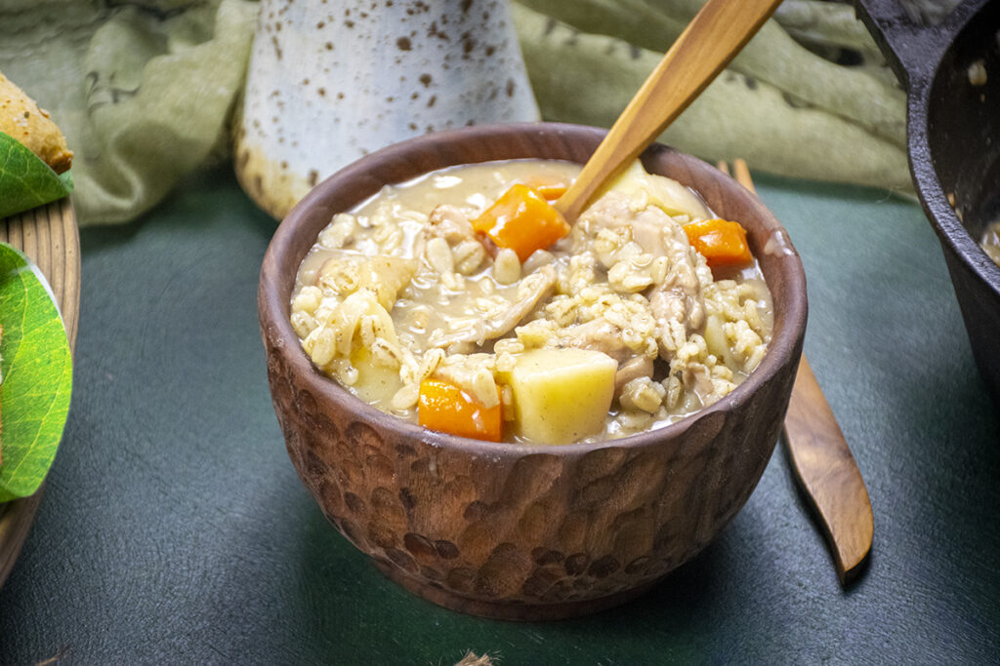

Sam's Hobbit Stew
BOIL ‘EM, MASH ‘EM, STICK ‘EM IN A STEW.

Ingredients:
- 8 oz rabbit tenderloin boneless, can sub chicken
- 1 whole carrot chopped
- 1 parsnip chopped
- 1 shallot diced
- 3-4 gold or red skin potatoes chopped, skin on
- 2-3 cups chicken broth or vegetable broth
- ½ tablespoon salt from the Shire (mix ratio: 1 part Italian seasoning, 4 parts salt)
- ¼ cup barley
- 2 tablespoons butter
- 8 oz ale can sub white wine or ginger ale
- 2 bay leaves
Directions:
- In a cast iron Dutch oven over medium-high heat, melt the butter until frothy. Stir in the carrots, parsnips, mushrooms, shallot, and potatoes. Sauté until the shallot is just starting to soften and the potatoes are beginning to brown, about 10 minutes. Season with salt from the Shire, to taste.
- Move the veggies to the sides of the pot, exposing the bottom in the center. Add the rabbit and sear, stirring it into the veggies as it cooks. Season lightly with salt.
- Sprinkle the flour over the top of the rabbit and veggie mix. Stir until everything is evenly coated in clumpy flour. Cook the flour down until browned lightly, about 2-3 minutes.
- Deglaze the pot with the ale, scraping up the browned bits on the bottom as you stir. Bring to a simmer. When about half of the liquid has cooked off, about 10 minutes, add the barley.
- Bring the stew to a light simmer. Add the chicken broth to the pot and stir. Bring the stew back to a simmer and add in the bay leaves.
- Simmer on low to medium-low for about 45 minutes, until the barley has doubled in size and is tender.
- Remove the bay leaves from the pot and discard. Serve the stew with lembas bread and enjoy.